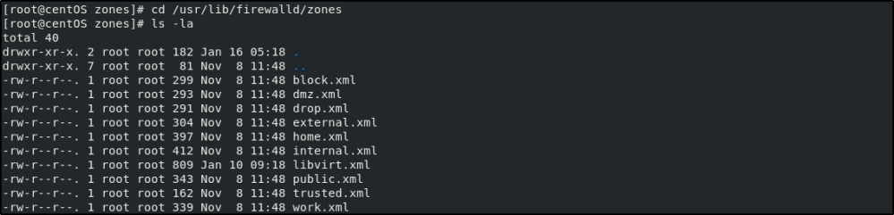
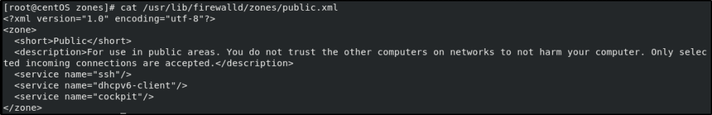

zones
Basic Concepts in Firewalld
• The firewalld daemon manages groups of rules using "zones".
• Zones are sets of
rules dictating what traffic should be allowed depending on the level of trust you have in the networks your
computer is connected to.
• Network interfaces are assigned a zone.
Zones
The pre-defined zones within firewalld are, from least trusted to most trusted:
•
drop: The lowest level of trust. All incoming connections are dropped without reply and only
outgoing connections are possible.
•
block: Similar to drop, but instead of simply dropping
connections, incoming requests are rejected with an icmp-host-prohibited or icmp6-adm-prohibited message.
•
public: Represents public, untrusted networks. You don’t trust other computers but may allow
selected incoming connections on a case-by-case basis.
•
external: External networks in the
event that you are using the firewall as your gateway. It is configured for NAT masquerading so that your internal
network remains private but reachable.
•
internal: The other side of the external zone, used
for the internal portion of a gateway. The computers are fairly trustworthy and some additional services are
available.
•
dmz: Used for computers located in a DMZ (isolated computers that will not have
access to the rest of your network). Only certain incoming connections are permitted.
•
work:
Used for work machines. Trust most of the computers in the network. A few more services might be allowed.
•
home: A home environment. It generally implies that you trust most of the other computers and that
a few more services will be accepted.
•
trusted: Trust all of the machines in the network. The
most open of the available options and should be used sparingly.
cd /usr/lib/firewalld/zones
ls -la

cat /usr/lib/firewalld/zones/public.xml
https://www.digitalocean.com/